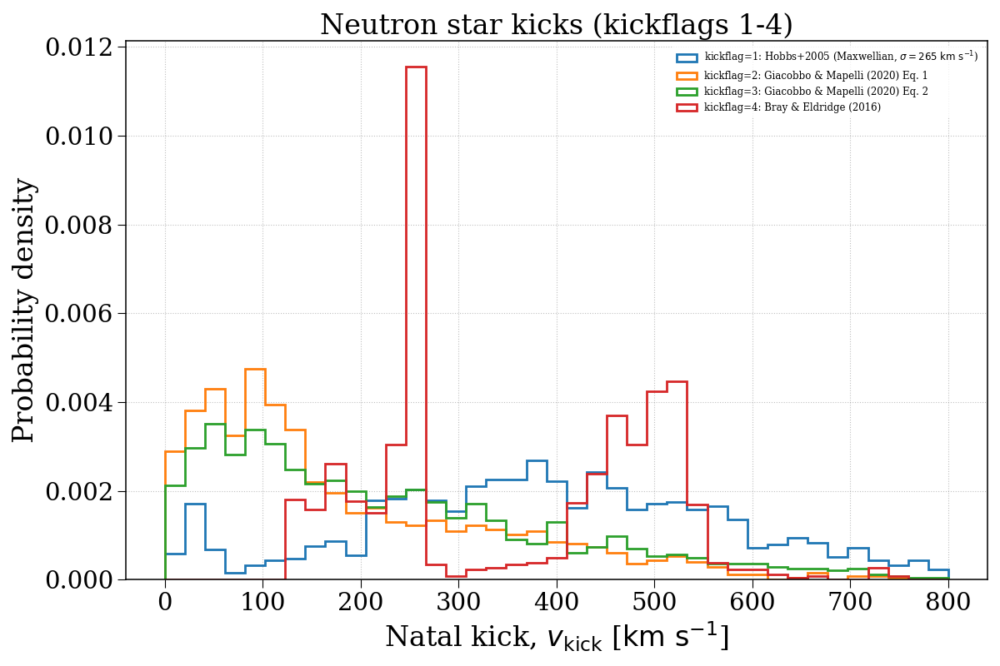
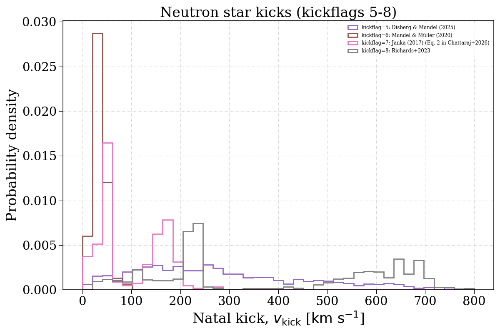
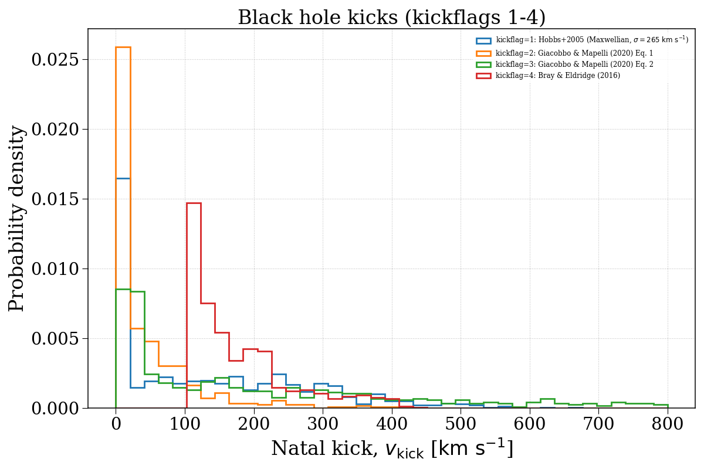
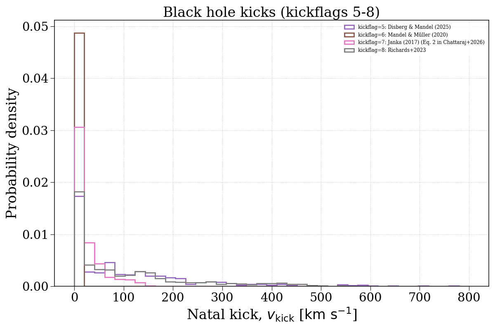

Note
Go to the end to download the full example code.
kickflag¶
This example demonstrates how changing the kickflag parameter can affect the natal kick velocity distributions of compact objects. We separate this into neutron stars and black holes.




Evolving population with kickflag = 1...
Evolving: 0%| | 0/2037 [00:00<?, ?sys/s]
Evolving: 1%| | 19/2037 [00:00<00:10, 185.39sys/s]
Evolving: 2%|▏ | 38/2037 [00:00<00:17, 116.57sys/s]
Evolving: 3%|▎ | 56/2037 [00:00<00:14, 135.93sys/s]
Evolving: 3%|▎ | 71/2037 [00:00<00:20, 97.12sys/s]
Evolving: 4%|▍ | 89/2037 [00:00<00:16, 115.96sys/s]
Evolving: 5%|▌ | 103/2037 [00:00<00:16, 116.40sys/s]
Evolving: 6%|▌ | 116/2037 [00:00<00:16, 119.03sys/s]
Evolving: 6%|▋ | 129/2037 [00:01<00:18, 100.63sys/s]
Evolving: 7%|▋ | 152/2037 [00:01<00:14, 131.02sys/s]
Evolving: 8%|▊ | 167/2037 [00:01<00:16, 113.18sys/s]
Evolving: 9%|▉ | 187/2037 [00:01<00:14, 131.30sys/s]
Evolving: 10%|▉ | 202/2037 [00:01<00:17, 103.86sys/s]
Evolving: 11%|█ | 221/2037 [00:01<00:16, 111.24sys/s]
Evolving: 12%|█▏ | 239/2037 [00:02<00:14, 125.19sys/s]
Evolving: 12%|█▏ | 253/2037 [00:02<00:19, 92.43sys/s]
Evolving: 13%|█▎ | 274/2037 [00:02<00:15, 114.46sys/s]
Evolving: 14%|█▍ | 289/2037 [00:02<00:14, 118.58sys/s]
Evolving: 15%|█▍ | 303/2037 [00:02<00:14, 121.38sys/s]
Evolving: 16%|█▌ | 317/2037 [00:02<00:14, 118.58sys/s]
Evolving: 16%|█▌ | 330/2037 [00:02<00:14, 119.72sys/s]
Evolving: 17%|█▋ | 343/2037 [00:03<00:18, 90.02sys/s]
Evolving: 18%|█▊ | 370/2037 [00:03<00:13, 120.62sys/s]
Evolving: 19%|█▉ | 384/2037 [00:03<00:15, 110.20sys/s]
Evolving: 20%|█▉ | 404/2037 [00:03<00:12, 127.21sys/s]
Evolving: 21%|██ | 418/2037 [00:03<00:13, 117.88sys/s]
Evolving: 21%|██▏ | 434/2037 [00:03<00:12, 124.07sys/s]
Evolving: 22%|██▏ | 448/2037 [00:03<00:17, 93.15sys/s]
Evolving: 23%|██▎ | 476/2037 [00:04<00:12, 129.38sys/s]
Evolving: 24%|██▍ | 492/2037 [00:04<00:11, 129.33sys/s]
Evolving: 25%|██▍ | 507/2037 [00:04<00:11, 130.00sys/s]
Evolving: 26%|██▌ | 522/2037 [00:04<00:11, 126.46sys/s]
Evolving: 26%|██▋ | 536/2037 [00:04<00:16, 93.45sys/s]
Evolving: 27%|██▋ | 549/2037 [00:04<00:17, 87.24sys/s]
Evolving: 27%|██▋ | 560/2037 [00:05<00:16, 87.43sys/s]
Evolving: 28%|██▊ | 571/2037 [00:05<00:18, 77.58sys/s]
Evolving: 29%|██▉ | 594/2037 [00:05<00:15, 91.95sys/s]
Evolving: 31%|███ | 625/2037 [00:05<00:10, 134.39sys/s]
Evolving: 31%|███▏ | 641/2037 [00:05<00:12, 107.63sys/s]
Evolving: 33%|███▎ | 664/2037 [00:05<00:10, 129.09sys/s]
Evolving: 33%|███▎ | 680/2037 [00:05<00:10, 130.90sys/s]
Evolving: 34%|███▍ | 695/2037 [00:06<00:14, 95.15sys/s]
Evolving: 35%|███▌ | 717/2037 [00:06<00:11, 117.35sys/s]
Evolving: 36%|███▌ | 732/2037 [00:06<00:10, 120.99sys/s]
Evolving: 37%|███▋ | 747/2037 [00:06<00:10, 119.68sys/s]
Evolving: 37%|███▋ | 761/2037 [00:06<00:10, 118.37sys/s]
Evolving: 38%|███▊ | 777/2037 [00:06<00:10, 122.76sys/s]
Evolving: 39%|███▉ | 794/2037 [00:06<00:09, 128.90sys/s]
Evolving: 40%|███▉ | 808/2037 [00:07<00:12, 95.81sys/s]
Evolving: 40%|████ | 820/2037 [00:07<00:14, 84.90sys/s]
Evolving: 42%|████▏ | 846/2037 [00:07<00:09, 119.66sys/s]
Evolving: 42%|████▏ | 861/2037 [00:07<00:11, 104.11sys/s]
Evolving: 43%|████▎ | 877/2037 [00:07<00:10, 108.21sys/s]
Evolving: 44%|████▍ | 895/2037 [00:07<00:09, 123.37sys/s]
Evolving: 45%|████▍ | 910/2037 [00:08<00:08, 128.96sys/s]
Evolving: 45%|████▌ | 925/2037 [00:08<00:08, 129.70sys/s]
Evolving: 46%|████▌ | 940/2037 [00:08<00:08, 133.64sys/s]
Evolving: 47%|████▋ | 955/2037 [00:08<00:08, 133.37sys/s]
Evolving: 48%|████▊ | 969/2037 [00:08<00:10, 105.44sys/s]
Evolving: 48%|████▊ | 981/2037 [00:08<00:11, 95.34sys/s]
Evolving: 49%|████▊ | 993/2037 [00:08<00:11, 92.77sys/s]
Evolving: 50%|█████ | 1019/2037 [00:09<00:08, 117.22sys/s]
Evolving: 51%|█████ | 1032/2037 [00:09<00:09, 108.84sys/s]
Evolving: 51%|█████▏ | 1048/2037 [00:09<00:08, 113.44sys/s]
Evolving: 52%|█████▏ | 1069/2037 [00:09<00:07, 133.91sys/s]
Evolving: 53%|█████▎ | 1084/2037 [00:09<00:08, 113.91sys/s]
Evolving: 54%|█████▍ | 1097/2037 [00:09<00:08, 109.04sys/s]
Evolving: 54%|█████▍ | 1109/2037 [00:09<00:09, 97.62sys/s]
Evolving: 55%|█████▌ | 1124/2037 [00:10<00:10, 85.61sys/s]
Evolving: 56%|█████▌ | 1145/2037 [00:10<00:08, 103.19sys/s]
Evolving: 57%|█████▋ | 1161/2037 [00:10<00:10, 83.60sys/s]
Evolving: 58%|█████▊ | 1188/2037 [00:10<00:07, 116.12sys/s]
Evolving: 59%|█████▉ | 1203/2037 [00:10<00:08, 93.86sys/s]
Evolving: 60%|██████ | 1229/2037 [00:10<00:06, 123.37sys/s]
Evolving: 61%|██████ | 1245/2037 [00:11<00:08, 92.56sys/s]
Evolving: 63%|██████▎ | 1275/2037 [00:11<00:05, 127.27sys/s]
Evolving: 63%|██████▎ | 1293/2037 [00:11<00:07, 103.06sys/s]
Evolving: 65%|██████▍ | 1316/2037 [00:11<00:05, 123.39sys/s]
Evolving: 65%|██████▌ | 1333/2037 [00:11<00:05, 129.80sys/s]
Evolving: 66%|██████▋ | 1350/2037 [00:11<00:05, 131.55sys/s]
Evolving: 67%|██████▋ | 1366/2037 [00:12<00:05, 127.23sys/s]
Evolving: 68%|██████▊ | 1381/2037 [00:12<00:06, 103.71sys/s]
Evolving: 69%|██████▊ | 1400/2037 [00:12<00:06, 93.03sys/s]
Evolving: 69%|██████▉ | 1412/2037 [00:12<00:06, 94.19sys/s]
Evolving: 71%|███████ | 1439/2037 [00:12<00:04, 123.11sys/s]
Evolving: 71%|███████▏ | 1455/2037 [00:12<00:04, 130.75sys/s]
Evolving: 72%|███████▏ | 1471/2037 [00:13<00:04, 131.58sys/s]
Evolving: 73%|███████▎ | 1486/2037 [00:13<00:04, 127.99sys/s]
Evolving: 74%|███████▎ | 1500/2037 [00:13<00:04, 124.86sys/s]
Evolving: 74%|███████▍ | 1514/2037 [00:13<00:04, 128.12sys/s]
Evolving: 75%|███████▌ | 1528/2037 [00:13<00:04, 103.43sys/s]
Evolving: 76%|███████▌ | 1548/2037 [00:13<00:03, 125.08sys/s]
Evolving: 77%|███████▋ | 1564/2037 [00:13<00:03, 129.85sys/s]
Evolving: 77%|███████▋ | 1578/2037 [00:13<00:03, 132.25sys/s]
Evolving: 78%|███████▊ | 1592/2037 [00:14<00:03, 128.67sys/s]
Evolving: 79%|███████▉ | 1606/2037 [00:14<00:03, 121.09sys/s]
Evolving: 80%|███████▉ | 1623/2037 [00:14<00:03, 130.83sys/s]
Evolving: 80%|████████ | 1637/2037 [00:14<00:03, 128.54sys/s]
Evolving: 81%|████████ | 1652/2037 [00:14<00:02, 132.60sys/s]
Evolving: 82%|████████▏ | 1666/2037 [00:14<00:03, 118.29sys/s]
Evolving: 82%|████████▏ | 1679/2037 [00:14<00:03, 92.37sys/s]
Evolving: 83%|████████▎ | 1696/2037 [00:15<00:03, 90.90sys/s]
Evolving: 84%|████████▍ | 1712/2037 [00:15<00:03, 96.23sys/s]
Evolving: 85%|████████▌ | 1740/2037 [00:15<00:02, 132.64sys/s]
Evolving: 86%|████████▌ | 1756/2037 [00:15<00:02, 133.85sys/s]
Evolving: 87%|████████▋ | 1771/2037 [00:15<00:02, 127.51sys/s]
Evolving: 88%|████████▊ | 1786/2037 [00:15<00:01, 129.11sys/s]
Evolving: 88%|████████▊ | 1800/2037 [00:15<00:01, 131.32sys/s]
Evolving: 89%|████████▉ | 1814/2037 [00:16<00:02, 94.65sys/s]
Evolving: 90%|████████▉ | 1832/2037 [00:16<00:02, 89.57sys/s]
Evolving: 91%|█████████▏| 1860/2037 [00:16<00:01, 120.96sys/s]
Evolving: 92%|█████████▏| 1875/2037 [00:16<00:01, 95.22sys/s]
Evolving: 93%|█████████▎| 1887/2037 [00:16<00:01, 90.25sys/s]
Evolving: 94%|█████████▍| 1917/2037 [00:16<00:00, 125.83sys/s]
Evolving: 95%|█████████▍| 1932/2037 [00:17<00:01, 83.09sys/s]
Evolving: 96%|█████████▋| 1962/2037 [00:17<00:00, 117.25sys/s]
Evolving: 97%|█████████▋| 1979/2037 [00:17<00:00, 102.10sys/s]
Evolving: 98%|█████████▊| 1994/2037 [00:17<00:00, 102.49sys/s]
Evolving: 99%|█████████▊| 2007/2037 [00:17<00:00, 104.58sys/s]
Evolving: 99%|█████████▉| 2022/2037 [00:18<00:00, 109.61sys/s]
Evolving: 100%|██████████| 2037/2037 [00:18<00:00, 112.46sys/s]
[Time taken: 18.4340 seconds]
Evolving population with kickflag = 2...
Evolving: 0%| | 0/2037 [00:00<?, ?sys/s]
Evolving: 0%| | 8/2037 [00:00<01:00, 33.61sys/s]
Evolving: 1%|▏ | 30/2037 [00:00<00:29, 69.09sys/s]
Evolving: 3%|▎ | 60/2037 [00:00<00:16, 123.11sys/s]
Evolving: 4%|▎ | 76/2037 [00:00<00:18, 104.00sys/s]
Evolving: 4%|▍ | 89/2037 [00:00<00:18, 105.36sys/s]
Evolving: 5%|▌ | 105/2037 [00:01<00:16, 117.80sys/s]
Evolving: 6%|▌ | 119/2037 [00:01<00:16, 116.01sys/s]
Evolving: 6%|▋ | 132/2037 [00:01<00:17, 107.70sys/s]
Evolving: 7%|▋ | 149/2037 [00:01<00:15, 120.07sys/s]
Evolving: 8%|▊ | 166/2037 [00:01<00:14, 127.97sys/s]
Evolving: 9%|▉ | 180/2037 [00:01<00:14, 126.34sys/s]
Evolving: 9%|▉ | 193/2037 [00:01<00:22, 83.36sys/s]
Evolving: 11%|█ | 221/2037 [00:02<00:15, 115.28sys/s]
Evolving: 12%|█▏ | 239/2037 [00:02<00:14, 126.77sys/s]
Evolving: 12%|█▏ | 254/2037 [00:02<00:18, 95.24sys/s]
Evolving: 14%|█▎ | 275/2037 [00:02<00:15, 114.87sys/s]
Evolving: 14%|█▍ | 290/2037 [00:02<00:15, 113.26sys/s]
Evolving: 15%|█▍ | 305/2037 [00:02<00:16, 106.32sys/s]
Evolving: 16%|█▌ | 325/2037 [00:02<00:13, 124.06sys/s]
Evolving: 17%|█▋ | 339/2037 [00:03<00:17, 95.04sys/s]
Evolving: 18%|█▊ | 360/2037 [00:03<00:15, 111.71sys/s]
Evolving: 19%|█▉ | 384/2037 [00:03<00:14, 117.57sys/s]
Evolving: 20%|█▉ | 405/2037 [00:03<00:12, 134.19sys/s]
Evolving: 21%|██ | 420/2037 [00:03<00:12, 127.94sys/s]
Evolving: 21%|██▏ | 435/2037 [00:03<00:12, 124.89sys/s]
Evolving: 22%|██▏ | 449/2037 [00:04<00:16, 95.63sys/s]
Evolving: 23%|██▎ | 476/2037 [00:04<00:12, 126.60sys/s]
Evolving: 24%|██▍ | 491/2037 [00:04<00:12, 128.15sys/s]
Evolving: 25%|██▍ | 506/2037 [00:04<00:12, 126.93sys/s]
Evolving: 26%|██▌ | 520/2037 [00:04<00:11, 128.67sys/s]
Evolving: 26%|██▌ | 534/2037 [00:04<00:16, 92.44sys/s]
Evolving: 27%|██▋ | 549/2037 [00:05<00:17, 85.52sys/s]
Evolving: 27%|██▋ | 560/2037 [00:05<00:16, 89.71sys/s]
Evolving: 28%|██▊ | 571/2037 [00:05<00:18, 80.18sys/s]
Evolving: 29%|██▉ | 594/2037 [00:05<00:15, 92.41sys/s]
Evolving: 31%|███ | 623/2037 [00:05<00:11, 128.05sys/s]
Evolving: 31%|███▏ | 638/2037 [00:05<00:13, 102.55sys/s]
Evolving: 32%|███▏ | 661/2037 [00:06<00:10, 125.63sys/s]
Evolving: 33%|███▎ | 678/2037 [00:06<00:10, 134.37sys/s]
Evolving: 34%|███▍ | 694/2037 [00:06<00:14, 95.54sys/s]
Evolving: 35%|███▌ | 717/2037 [00:06<00:11, 119.37sys/s]
Evolving: 36%|███▌ | 733/2037 [00:06<00:10, 121.04sys/s]
Evolving: 37%|███▋ | 748/2037 [00:06<00:10, 117.63sys/s]
Evolving: 38%|███▊ | 764/2037 [00:06<00:10, 120.15sys/s]
Evolving: 38%|███▊ | 778/2037 [00:07<00:10, 124.08sys/s]
Evolving: 39%|███▉ | 794/2037 [00:07<00:09, 125.04sys/s]
Evolving: 40%|███▉ | 808/2037 [00:07<00:13, 93.41sys/s]
Evolving: 40%|████ | 819/2037 [00:07<00:14, 84.28sys/s]
Evolving: 41%|████▏ | 841/2037 [00:07<00:10, 110.92sys/s]
Evolving: 42%|████▏ | 854/2037 [00:07<00:12, 95.00sys/s]
Evolving: 43%|████▎ | 875/2037 [00:07<00:09, 116.51sys/s]
Evolving: 44%|████▎ | 891/2037 [00:08<00:09, 125.93sys/s]
Evolving: 44%|████▍ | 906/2037 [00:08<00:09, 122.57sys/s]
Evolving: 45%|████▌ | 922/2037 [00:08<00:08, 124.49sys/s]
Evolving: 46%|████▌ | 939/2037 [00:08<00:08, 134.03sys/s]
Evolving: 47%|████▋ | 954/2037 [00:08<00:08, 131.85sys/s]
Evolving: 48%|████▊ | 968/2037 [00:08<00:09, 107.49sys/s]
Evolving: 48%|████▊ | 980/2037 [00:08<00:11, 95.48sys/s]
Evolving: 49%|████▊ | 993/2037 [00:09<00:10, 95.43sys/s]
Evolving: 50%|████▉ | 1016/2037 [00:09<00:08, 125.05sys/s]
Evolving: 51%|█████ | 1030/2037 [00:09<00:10, 98.73sys/s]
Evolving: 52%|█████▏ | 1056/2037 [00:09<00:07, 125.58sys/s]
Evolving: 53%|█████▎ | 1072/2037 [00:09<00:07, 132.75sys/s]
Evolving: 53%|█████▎ | 1087/2037 [00:09<00:10, 92.73sys/s]
Evolving: 54%|█████▍ | 1102/2037 [00:10<00:09, 94.06sys/s]
Evolving: 55%|█████▌ | 1124/2037 [00:10<00:10, 90.14sys/s]
Evolving: 56%|█████▌ | 1145/2037 [00:10<00:08, 105.17sys/s]
Evolving: 57%|█████▋ | 1161/2037 [00:10<00:09, 91.24sys/s]
Evolving: 58%|█████▊ | 1188/2037 [00:10<00:07, 120.08sys/s]
Evolving: 59%|█████▉ | 1203/2037 [00:11<00:08, 94.91sys/s]
Evolving: 60%|██████ | 1229/2037 [00:11<00:06, 121.92sys/s]
Evolving: 61%|██████ | 1245/2037 [00:11<00:07, 99.95sys/s]
Evolving: 62%|██████▏ | 1269/2037 [00:11<00:06, 119.00sys/s]
Evolving: 63%|██████▎ | 1284/2037 [00:11<00:08, 91.81sys/s]
Evolving: 65%|██████▍ | 1320/2037 [00:11<00:05, 134.56sys/s]
Evolving: 66%|██████▌ | 1338/2037 [00:12<00:05, 135.20sys/s]
Evolving: 67%|██████▋ | 1355/2037 [00:12<00:05, 135.93sys/s]
Evolving: 67%|██████▋ | 1371/2037 [00:12<00:05, 124.95sys/s]
Evolving: 68%|██████▊ | 1386/2037 [00:12<00:05, 116.21sys/s]
Evolving: 69%|██████▊ | 1400/2037 [00:12<00:07, 90.94sys/s]
Evolving: 69%|██████▉ | 1412/2037 [00:12<00:06, 94.85sys/s]
Evolving: 71%|███████ | 1439/2037 [00:13<00:04, 121.01sys/s]
Evolving: 71%|███████▏ | 1456/2037 [00:13<00:04, 129.39sys/s]
Evolving: 72%|███████▏ | 1471/2037 [00:13<00:04, 130.54sys/s]
Evolving: 73%|███████▎ | 1485/2037 [00:13<00:04, 130.10sys/s]
Evolving: 74%|███████▎ | 1499/2037 [00:13<00:04, 124.75sys/s]
Evolving: 74%|███████▍ | 1515/2037 [00:13<00:04, 129.27sys/s]
Evolving: 75%|███████▌ | 1529/2037 [00:13<00:04, 108.40sys/s]
Evolving: 76%|███████▌ | 1548/2037 [00:13<00:03, 125.95sys/s]
Evolving: 77%|███████▋ | 1563/2037 [00:13<00:03, 128.86sys/s]
Evolving: 77%|███████▋ | 1577/2037 [00:14<00:03, 128.31sys/s]
Evolving: 78%|███████▊ | 1591/2037 [00:14<00:03, 130.75sys/s]
Evolving: 79%|███████▉ | 1605/2037 [00:14<00:03, 125.27sys/s]
Evolving: 79%|███████▉ | 1619/2037 [00:14<00:03, 126.62sys/s]
Evolving: 80%|████████ | 1634/2037 [00:14<00:03, 127.14sys/s]
Evolving: 81%|████████ | 1650/2037 [00:14<00:02, 130.28sys/s]
Evolving: 82%|████████▏ | 1665/2037 [00:14<00:02, 131.46sys/s]
Evolving: 82%|████████▏ | 1679/2037 [00:15<00:04, 88.90sys/s]
Evolving: 83%|████████▎ | 1696/2037 [00:15<00:03, 88.57sys/s]
Evolving: 84%|████████▍ | 1712/2037 [00:15<00:03, 98.42sys/s]
Evolving: 85%|████████▌ | 1741/2037 [00:15<00:02, 138.04sys/s]
Evolving: 86%|████████▋ | 1758/2037 [00:15<00:02, 134.41sys/s]
Evolving: 87%|████████▋ | 1774/2037 [00:15<00:02, 130.37sys/s]
Evolving: 88%|████████▊ | 1789/2037 [00:15<00:01, 132.05sys/s]
Evolving: 89%|████████▊ | 1804/2037 [00:15<00:01, 129.93sys/s]
Evolving: 89%|████████▉ | 1818/2037 [00:16<00:02, 103.24sys/s]
Evolving: 90%|████████▉ | 1832/2037 [00:16<00:02, 87.47sys/s]
Evolving: 91%|█████████ | 1856/2037 [00:16<00:01, 115.44sys/s]
Evolving: 92%|█████████▏| 1870/2037 [00:16<00:01, 84.92sys/s]
Evolving: 92%|█████████▏| 1883/2037 [00:16<00:01, 86.81sys/s]
Evolving: 94%|█████████▍| 1914/2037 [00:17<00:01, 120.82sys/s]
Evolving: 95%|█████████▍| 1928/2037 [00:17<00:01, 107.29sys/s]
Evolving: 95%|█████████▌| 1941/2037 [00:17<00:01, 90.44sys/s]
Evolving: 96%|█████████▋| 1962/2037 [00:17<00:00, 111.50sys/s]
Evolving: 97%|█████████▋| 1976/2037 [00:17<00:00, 101.29sys/s]
Evolving: 98%|█████████▊| 1988/2037 [00:17<00:00, 88.42sys/s]
Evolving: 98%|█████████▊| 2006/2037 [00:18<00:00, 106.53sys/s]
Evolving: 99%|█████████▉| 2019/2037 [00:18<00:00, 108.50sys/s]
Evolving: 100%|█████████▉| 2035/2037 [00:18<00:00, 119.57sys/s]
Evolving: 100%|██████████| 2037/2037 [00:18<00:00, 111.35sys/s]
[Time taken: 18.4685 seconds]
Evolving population with kickflag = 3...
Evolving: 0%| | 0/2037 [00:00<?, ?sys/s]
Evolving: 0%| | 8/2037 [00:00<01:01, 32.90sys/s]
Evolving: 1%|▏ | 30/2037 [00:00<00:27, 72.58sys/s]
Evolving: 3%|▎ | 56/2037 [00:00<00:16, 123.32sys/s]
Evolving: 4%|▎ | 72/2037 [00:00<00:20, 96.03sys/s]
Evolving: 4%|▍ | 89/2037 [00:00<00:17, 110.97sys/s]
Evolving: 5%|▌ | 103/2037 [00:01<00:16, 117.78sys/s]
Evolving: 6%|▌ | 117/2037 [00:01<00:16, 116.10sys/s]
Evolving: 6%|▋ | 130/2037 [00:01<00:19, 97.83sys/s]
Evolving: 7%|▋ | 150/2037 [00:01<00:15, 121.00sys/s]
Evolving: 8%|▊ | 164/2037 [00:01<00:15, 123.29sys/s]
Evolving: 9%|▊ | 178/2037 [00:01<00:15, 118.12sys/s]
Evolving: 9%|▉ | 191/2037 [00:01<00:22, 80.28sys/s]
Evolving: 11%|█ | 221/2037 [00:02<00:15, 115.85sys/s]
Evolving: 12%|█▏ | 239/2037 [00:02<00:13, 128.77sys/s]
Evolving: 13%|█▎ | 255/2037 [00:02<00:18, 96.09sys/s]
Evolving: 14%|█▎ | 275/2037 [00:02<00:15, 114.96sys/s]
Evolving: 14%|█▍ | 290/2037 [00:02<00:15, 112.82sys/s]
Evolving: 15%|█▍ | 305/2037 [00:02<00:16, 106.02sys/s]
Evolving: 16%|█▌ | 325/2037 [00:02<00:13, 125.47sys/s]
Evolving: 17%|█▋ | 340/2037 [00:03<00:17, 98.06sys/s]
Evolving: 18%|█▊ | 360/2037 [00:03<00:14, 112.65sys/s]
Evolving: 19%|█▊ | 380/2037 [00:03<00:12, 130.76sys/s]
Evolving: 19%|█▉ | 396/2037 [00:03<00:12, 128.54sys/s]
Evolving: 20%|██ | 411/2037 [00:03<00:14, 111.28sys/s]
Evolving: 21%|██ | 431/2037 [00:03<00:12, 129.01sys/s]
Evolving: 22%|██▏ | 446/2037 [00:04<00:17, 91.92sys/s]
Evolving: 23%|██▎ | 476/2037 [00:04<00:11, 130.82sys/s]
Evolving: 24%|██▍ | 493/2037 [00:04<00:11, 132.99sys/s]
Evolving: 25%|██▌ | 510/2037 [00:04<00:12, 126.02sys/s]
Evolving: 26%|██▌ | 525/2037 [00:04<00:12, 123.14sys/s]
Evolving: 26%|██▋ | 539/2037 [00:04<00:14, 100.46sys/s]
Evolving: 27%|██▋ | 551/2037 [00:05<00:16, 87.86sys/s]
Evolving: 28%|██▊ | 561/2037 [00:05<00:17, 86.23sys/s]
Evolving: 28%|██▊ | 571/2037 [00:05<00:19, 74.22sys/s]
Evolving: 29%|██▉ | 594/2037 [00:05<00:16, 89.28sys/s]
Evolving: 31%|███ | 626/2037 [00:05<00:11, 128.24sys/s]
Evolving: 31%|███▏ | 641/2037 [00:05<00:13, 102.20sys/s]
Evolving: 33%|███▎ | 668/2037 [00:06<00:10, 133.20sys/s]
Evolving: 34%|███▎ | 685/2037 [00:06<00:10, 131.07sys/s]
Evolving: 34%|███▍ | 701/2037 [00:06<00:14, 94.83sys/s]
Evolving: 36%|███▌ | 725/2037 [00:06<00:10, 120.23sys/s]
Evolving: 36%|███▋ | 741/2037 [00:06<00:11, 113.70sys/s]
Evolving: 37%|███▋ | 758/2037 [00:06<00:10, 124.02sys/s]
Evolving: 38%|███▊ | 773/2037 [00:06<00:10, 126.11sys/s]
Evolving: 39%|███▊ | 788/2037 [00:07<00:09, 131.77sys/s]
Evolving: 39%|███▉ | 803/2037 [00:07<00:13, 93.47sys/s]
Evolving: 40%|████ | 817/2037 [00:07<00:14, 82.25sys/s]
Evolving: 42%|████▏ | 847/2037 [00:07<00:09, 119.31sys/s]
Evolving: 42%|████▏ | 862/2037 [00:07<00:10, 109.01sys/s]
Evolving: 43%|████▎ | 877/2037 [00:08<00:10, 111.86sys/s]
Evolving: 44%|████▍ | 895/2037 [00:08<00:09, 125.22sys/s]
Evolving: 45%|████▍ | 910/2037 [00:08<00:08, 127.15sys/s]
Evolving: 45%|████▌ | 925/2037 [00:08<00:08, 131.75sys/s]
Evolving: 46%|████▌ | 940/2037 [00:08<00:08, 133.31sys/s]
Evolving: 47%|████▋ | 954/2037 [00:08<00:08, 125.82sys/s]
Evolving: 48%|████▊ | 968/2037 [00:08<00:09, 106.95sys/s]
Evolving: 48%|████▊ | 980/2037 [00:08<00:11, 95.53sys/s]
Evolving: 49%|████▊ | 993/2037 [00:09<00:10, 95.08sys/s]
Evolving: 50%|█████ | 1019/2037 [00:09<00:08, 116.99sys/s]
Evolving: 51%|█████ | 1031/2037 [00:09<00:09, 105.40sys/s]
Evolving: 51%|█████▏ | 1048/2037 [00:09<00:08, 118.76sys/s]
Evolving: 52%|█████▏ | 1068/2037 [00:09<00:07, 130.95sys/s]
Evolving: 53%|█████▎ | 1082/2037 [00:09<00:08, 111.63sys/s]
Evolving: 54%|█████▎ | 1094/2037 [00:09<00:08, 105.06sys/s]
Evolving: 54%|█████▍ | 1105/2037 [00:10<00:09, 94.87sys/s]
Evolving: 55%|█████▌ | 1124/2037 [00:10<00:10, 89.05sys/s]
Evolving: 56%|█████▌ | 1145/2037 [00:10<00:08, 102.87sys/s]
Evolving: 57%|█████▋ | 1161/2037 [00:10<00:09, 87.69sys/s]
Evolving: 58%|█████▊ | 1188/2037 [00:10<00:07, 116.86sys/s]
Evolving: 59%|█████▉ | 1202/2037 [00:11<00:08, 93.59sys/s]
Evolving: 60%|██████ | 1232/2037 [00:11<00:06, 121.71sys/s]
Evolving: 61%|██████ | 1247/2037 [00:11<00:07, 102.95sys/s]
Evolving: 62%|██████▏ | 1269/2037 [00:11<00:06, 114.54sys/s]
Evolving: 63%|██████▎ | 1284/2037 [00:11<00:07, 95.29sys/s]
Evolving: 65%|██████▍ | 1316/2037 [00:11<00:05, 127.91sys/s]
Evolving: 65%|██████▌ | 1333/2037 [00:12<00:05, 135.31sys/s]
Evolving: 66%|██████▌ | 1349/2037 [00:12<00:05, 129.91sys/s]
Evolving: 67%|██████▋ | 1364/2037 [00:12<00:05, 133.78sys/s]
Evolving: 68%|██████▊ | 1379/2037 [00:12<00:06, 104.26sys/s]
Evolving: 69%|██████▊ | 1400/2037 [00:12<00:06, 95.80sys/s]
Evolving: 69%|██████▉ | 1412/2037 [00:12<00:06, 96.96sys/s]
Evolving: 71%|███████ | 1439/2037 [00:13<00:04, 123.68sys/s]
Evolving: 72%|███████▏ | 1457/2037 [00:13<00:04, 133.82sys/s]
Evolving: 72%|███████▏ | 1472/2037 [00:13<00:04, 131.03sys/s]
Evolving: 73%|███████▎ | 1486/2037 [00:13<00:04, 129.24sys/s]
Evolving: 74%|███████▎ | 1501/2037 [00:13<00:04, 131.88sys/s]
Evolving: 74%|███████▍ | 1515/2037 [00:13<00:04, 128.50sys/s]
Evolving: 75%|███████▌ | 1529/2037 [00:13<00:04, 104.74sys/s]
Evolving: 76%|███████▌ | 1548/2037 [00:13<00:04, 121.72sys/s]
Evolving: 77%|███████▋ | 1564/2037 [00:14<00:03, 125.80sys/s]
Evolving: 78%|███████▊ | 1580/2037 [00:14<00:03, 117.79sys/s]
Evolving: 79%|███████▊ | 1600/2037 [00:14<00:03, 133.89sys/s]
Evolving: 79%|███████▉ | 1615/2037 [00:14<00:03, 136.21sys/s]
Evolving: 80%|████████ | 1630/2037 [00:14<00:03, 125.62sys/s]
Evolving: 81%|████████ | 1647/2037 [00:14<00:02, 134.49sys/s]
Evolving: 82%|████████▏ | 1662/2037 [00:14<00:02, 134.08sys/s]
Evolving: 82%|████████▏ | 1676/2037 [00:15<00:04, 89.61sys/s]
Evolving: 83%|████████▎ | 1696/2037 [00:15<00:03, 93.31sys/s]
Evolving: 84%|████████▍ | 1712/2037 [00:15<00:03, 94.99sys/s]
Evolving: 86%|████████▌ | 1742/2037 [00:15<00:02, 132.44sys/s]
Evolving: 86%|████████▋ | 1760/2037 [00:15<00:01, 139.62sys/s]
Evolving: 87%|████████▋ | 1776/2037 [00:15<00:01, 133.78sys/s]
Evolving: 88%|████████▊ | 1791/2037 [00:15<00:01, 126.61sys/s]
Evolving: 89%|████████▊ | 1805/2037 [00:15<00:01, 128.73sys/s]
Evolving: 89%|████████▉ | 1819/2037 [00:16<00:02, 103.87sys/s]
Evolving: 90%|████████▉ | 1832/2037 [00:16<00:02, 89.00sys/s]
Evolving: 91%|█████████ | 1856/2037 [00:16<00:01, 118.94sys/s]
Evolving: 92%|█████████▏| 1870/2037 [00:16<00:01, 87.25sys/s]
Evolving: 92%|█████████▏| 1883/2037 [00:16<00:01, 83.19sys/s]
Evolving: 94%|█████████▍| 1918/2037 [00:17<00:00, 121.07sys/s]
Evolving: 95%|█████████▍| 1932/2037 [00:17<00:01, 85.39sys/s]
Evolving: 96%|█████████▋| 1963/2037 [00:17<00:00, 120.23sys/s]
Evolving: 97%|█████████▋| 1980/2037 [00:17<00:00, 106.65sys/s]
Evolving: 98%|█████████▊| 1994/2037 [00:17<00:00, 104.23sys/s]
Evolving: 99%|█████████▊| 2007/2037 [00:18<00:00, 108.30sys/s]
Evolving: 99%|█████████▉| 2020/2037 [00:18<00:00, 112.90sys/s]
Evolving: 100%|█████████▉| 2033/2037 [00:18<00:00, 116.03sys/s]
Evolving: 100%|██████████| 2037/2037 [00:18<00:00, 111.58sys/s]
[Time taken: 18.4345 seconds]
Evolving population with kickflag = 4...
Evolving: 0%| | 0/2037 [00:00<?, ?sys/s]
Evolving: 0%| | 8/2037 [00:00<01:00, 33.39sys/s]
Evolving: 1%|▏ | 30/2037 [00:00<00:28, 70.19sys/s]
Evolving: 3%|▎ | 58/2037 [00:00<00:16, 123.22sys/s]
Evolving: 4%|▎ | 74/2037 [00:00<00:19, 102.27sys/s]
Evolving: 4%|▍ | 87/2037 [00:00<00:18, 107.46sys/s]
Evolving: 5%|▍ | 100/2037 [00:01<00:17, 110.00sys/s]
Evolving: 6%|▌ | 114/2037 [00:01<00:16, 115.78sys/s]
Evolving: 6%|▋ | 129/2037 [00:01<00:18, 101.82sys/s]
Evolving: 7%|▋ | 151/2037 [00:01<00:15, 124.82sys/s]
Evolving: 8%|▊ | 166/2037 [00:01<00:14, 130.13sys/s]
Evolving: 9%|▉ | 180/2037 [00:01<00:14, 128.68sys/s]
Evolving: 10%|▉ | 194/2037 [00:01<00:19, 96.64sys/s]
Evolving: 11%|█ | 217/2037 [00:01<00:14, 124.28sys/s]
Evolving: 11%|█▏ | 232/2037 [00:02<00:14, 124.46sys/s]
Evolving: 12%|█▏ | 246/2037 [00:02<00:17, 102.06sys/s]
Evolving: 13%|█▎ | 258/2037 [00:02<00:16, 104.84sys/s]
Evolving: 13%|█▎ | 271/2037 [00:02<00:16, 110.09sys/s]
Evolving: 14%|█▍ | 284/2037 [00:02<00:15, 114.60sys/s]
Evolving: 15%|█▍ | 300/2037 [00:02<00:14, 119.88sys/s]
Evolving: 15%|█▌ | 313/2037 [00:02<00:14, 117.42sys/s]
Evolving: 16%|█▌ | 327/2037 [00:02<00:14, 120.95sys/s]
Evolving: 17%|█▋ | 340/2037 [00:03<00:17, 95.58sys/s]
Evolving: 18%|█▊ | 360/2037 [00:03<00:15, 109.69sys/s]
Evolving: 19%|█▉ | 383/2037 [00:03<00:12, 135.25sys/s]
Evolving: 20%|█▉ | 398/2037 [00:03<00:12, 128.54sys/s]
Evolving: 20%|██ | 412/2037 [00:03<00:14, 115.04sys/s]
Evolving: 21%|██ | 431/2037 [00:03<00:12, 124.62sys/s]
Evolving: 22%|██▏ | 445/2037 [00:03<00:12, 125.18sys/s]
Evolving: 22%|██▏ | 458/2037 [00:04<00:14, 110.08sys/s]
Evolving: 23%|██▎ | 474/2037 [00:04<00:12, 120.30sys/s]
Evolving: 24%|██▍ | 489/2037 [00:04<00:12, 122.48sys/s]
Evolving: 25%|██▍ | 506/2037 [00:04<00:12, 127.47sys/s]
Evolving: 26%|██▌ | 520/2037 [00:04<00:12, 123.65sys/s]
Evolving: 26%|██▌ | 533/2037 [00:04<00:15, 97.94sys/s]
Evolving: 27%|██▋ | 549/2037 [00:04<00:17, 86.73sys/s]
Evolving: 27%|██▋ | 560/2037 [00:05<00:17, 86.55sys/s]
Evolving: 28%|██▊ | 571/2037 [00:05<00:18, 79.21sys/s]
Evolving: 29%|██▉ | 594/2037 [00:05<00:15, 90.56sys/s]
Evolving: 31%|███ | 627/2037 [00:05<00:10, 135.31sys/s]
Evolving: 32%|███▏ | 643/2037 [00:05<00:12, 109.65sys/s]
Evolving: 33%|███▎ | 664/2037 [00:05<00:10, 128.95sys/s]
Evolving: 33%|███▎ | 680/2037 [00:06<00:10, 132.22sys/s]
Evolving: 34%|███▍ | 696/2037 [00:06<00:12, 108.83sys/s]
Evolving: 35%|███▍ | 709/2037 [00:06<00:12, 106.14sys/s]
Evolving: 36%|███▌ | 727/2037 [00:06<00:10, 121.99sys/s]
Evolving: 36%|███▋ | 741/2037 [00:06<00:11, 113.92sys/s]
Evolving: 37%|███▋ | 758/2037 [00:06<00:10, 126.25sys/s]
Evolving: 38%|███▊ | 772/2037 [00:06<00:09, 126.51sys/s]
Evolving: 39%|███▊ | 788/2037 [00:06<00:10, 124.24sys/s]
Evolving: 39%|███▉ | 803/2037 [00:07<00:13, 92.88sys/s]
Evolving: 40%|████ | 817/2037 [00:07<00:14, 82.95sys/s]
Evolving: 41%|████▏ | 844/2037 [00:07<00:10, 117.80sys/s]
Evolving: 42%|████▏ | 859/2037 [00:07<00:11, 104.91sys/s]
Evolving: 43%|████▎ | 877/2037 [00:07<00:10, 115.50sys/s]
Evolving: 44%|████▍ | 894/2037 [00:08<00:09, 121.89sys/s]
Evolving: 45%|████▍ | 910/2037 [00:08<00:08, 128.63sys/s]
Evolving: 45%|████▌ | 925/2037 [00:08<00:08, 132.78sys/s]
Evolving: 46%|████▌ | 940/2037 [00:08<00:08, 135.50sys/s]
Evolving: 47%|████▋ | 955/2037 [00:08<00:07, 136.53sys/s]
Evolving: 48%|████▊ | 970/2037 [00:08<00:09, 108.74sys/s]
Evolving: 48%|████▊ | 983/2037 [00:08<00:10, 103.79sys/s]
Evolving: 49%|████▉ | 995/2037 [00:08<00:10, 95.32sys/s]
Evolving: 50%|█████ | 1019/2037 [00:09<00:09, 106.54sys/s]
Evolving: 51%|█████ | 1039/2037 [00:09<00:08, 124.04sys/s]
Evolving: 52%|█████▏ | 1053/2037 [00:09<00:07, 125.43sys/s]
Evolving: 52%|█████▏ | 1068/2037 [00:09<00:07, 127.01sys/s]
Evolving: 53%|█████▎ | 1082/2037 [00:09<00:08, 111.20sys/s]
Evolving: 54%|█████▎ | 1094/2037 [00:09<00:09, 101.78sys/s]
Evolving: 54%|█████▍ | 1105/2037 [00:09<00:10, 92.58sys/s]
Evolving: 55%|█████▌ | 1124/2037 [00:10<00:10, 87.51sys/s]
Evolving: 56%|█████▌ | 1145/2037 [00:10<00:08, 104.55sys/s]
Evolving: 57%|█████▋ | 1161/2037 [00:10<00:10, 86.29sys/s]
Evolving: 58%|█████▊ | 1188/2037 [00:10<00:07, 119.15sys/s]
Evolving: 59%|█████▉ | 1203/2037 [00:10<00:08, 95.81sys/s]
Evolving: 60%|██████ | 1232/2037 [00:11<00:06, 121.67sys/s]
Evolving: 61%|██████ | 1247/2037 [00:11<00:08, 98.66sys/s]
Evolving: 63%|██████▎ | 1275/2037 [00:11<00:05, 127.53sys/s]
Evolving: 63%|██████▎ | 1291/2037 [00:11<00:07, 104.91sys/s]
Evolving: 64%|██████▍ | 1309/2037 [00:11<00:06, 117.20sys/s]
Evolving: 65%|██████▌ | 1328/2037 [00:11<00:05, 130.58sys/s]
Evolving: 66%|██████▌ | 1344/2037 [00:11<00:05, 132.08sys/s]
Evolving: 67%|██████▋ | 1359/2037 [00:12<00:05, 123.97sys/s]
Evolving: 68%|██████▊ | 1376/2037 [00:12<00:06, 102.56sys/s]
Evolving: 69%|██████▊ | 1400/2037 [00:12<00:06, 99.12sys/s]
Evolving: 69%|██████▉ | 1412/2037 [00:12<00:06, 97.30sys/s]
Evolving: 71%|███████ | 1439/2037 [00:12<00:04, 125.83sys/s]
Evolving: 72%|███████▏ | 1457/2037 [00:12<00:04, 134.71sys/s]
Evolving: 72%|███████▏ | 1473/2037 [00:13<00:04, 137.92sys/s]
Evolving: 73%|███████▎ | 1488/2037 [00:13<00:04, 126.42sys/s]
Evolving: 74%|███████▍ | 1503/2037 [00:13<00:04, 129.59sys/s]
Evolving: 74%|███████▍ | 1517/2037 [00:13<00:05, 91.73sys/s]
Evolving: 76%|███████▌ | 1548/2037 [00:13<00:03, 128.47sys/s]
Evolving: 77%|███████▋ | 1565/2037 [00:13<00:03, 135.98sys/s]
Evolving: 78%|███████▊ | 1581/2037 [00:14<00:03, 123.72sys/s]
Evolving: 79%|███████▊ | 1600/2037 [00:14<00:03, 135.63sys/s]
Evolving: 79%|███████▉ | 1615/2037 [00:14<00:03, 134.01sys/s]
Evolving: 80%|████████ | 1630/2037 [00:14<00:03, 131.80sys/s]
Evolving: 81%|████████ | 1644/2037 [00:14<00:02, 133.19sys/s]
Evolving: 81%|████████▏ | 1658/2037 [00:14<00:02, 134.55sys/s]
Evolving: 82%|████████▏ | 1672/2037 [00:14<00:02, 128.32sys/s]
Evolving: 83%|████████▎ | 1686/2037 [00:14<00:03, 100.10sys/s]
Evolving: 83%|████████▎ | 1698/2037 [00:15<00:03, 85.88sys/s]
Evolving: 84%|████████▍ | 1712/2037 [00:15<00:03, 88.47sys/s]
Evolving: 86%|████████▌ | 1743/2037 [00:15<00:02, 131.31sys/s]
Evolving: 86%|████████▋ | 1758/2037 [00:15<00:02, 135.28sys/s]
Evolving: 87%|████████▋ | 1773/2037 [00:15<00:02, 124.51sys/s]
Evolving: 88%|████████▊ | 1789/2037 [00:15<00:01, 131.76sys/s]
Evolving: 89%|████████▊ | 1803/2037 [00:15<00:01, 130.75sys/s]
Evolving: 89%|████████▉ | 1817/2037 [00:16<00:02, 102.16sys/s]
Evolving: 90%|████████▉ | 1832/2037 [00:16<00:02, 88.14sys/s]
Evolving: 91%|█████████ | 1858/2037 [00:16<00:01, 121.23sys/s]
Evolving: 92%|█████████▏| 1873/2037 [00:16<00:01, 90.66sys/s]
Evolving: 93%|█████████▎| 1885/2037 [00:16<00:01, 87.33sys/s]
Evolving: 94%|█████████▍| 1917/2037 [00:16<00:00, 129.34sys/s]
Evolving: 95%|█████████▍| 1934/2037 [00:17<00:01, 83.26sys/s]
Evolving: 96%|█████████▋| 1962/2037 [00:17<00:00, 113.23sys/s]
Evolving: 97%|█████████▋| 1979/2037 [00:17<00:00, 107.09sys/s]
Evolving: 98%|█████████▊| 1994/2037 [00:17<00:00, 99.01sys/s]
Evolving: 99%|█████████▊| 2008/2037 [00:17<00:00, 103.98sys/s]
Evolving: 99%|█████████▉| 2024/2037 [00:18<00:00, 114.73sys/s]
Evolving: 100%|██████████| 2037/2037 [00:18<00:00, 112.45sys/s]
[Time taken: 18.2914 seconds]
Evolving population with kickflag = 5...
Evolving: 0%| | 0/2037 [00:00<?, ?sys/s]
Evolving: 0%| | 8/2037 [00:00<01:01, 32.98sys/s]
Evolving: 1%|▏ | 30/2037 [00:00<00:28, 69.69sys/s]
Evolving: 3%|▎ | 60/2037 [00:00<00:15, 129.03sys/s]
Evolving: 4%|▍ | 77/2037 [00:00<00:18, 106.28sys/s]
Evolving: 4%|▍ | 91/2037 [00:00<00:17, 113.18sys/s]
Evolving: 5%|▌ | 105/2037 [00:01<00:17, 112.39sys/s]
Evolving: 6%|▌ | 118/2037 [00:01<00:16, 113.32sys/s]
Evolving: 6%|▋ | 131/2037 [00:01<00:17, 107.20sys/s]
Evolving: 7%|▋ | 151/2037 [00:01<00:14, 130.09sys/s]
Evolving: 8%|▊ | 166/2037 [00:01<00:15, 124.17sys/s]
Evolving: 9%|▉ | 180/2037 [00:01<00:15, 123.77sys/s]
Evolving: 9%|▉ | 193/2037 [00:01<00:22, 83.64sys/s]
Evolving: 11%|█ | 221/2037 [00:02<00:15, 115.58sys/s]
Evolving: 12%|█▏ | 236/2037 [00:02<00:14, 122.43sys/s]
Evolving: 12%|█▏ | 250/2037 [00:02<00:19, 90.15sys/s]
Evolving: 13%|█▎ | 274/2037 [00:02<00:14, 118.05sys/s]
Evolving: 14%|█▍ | 289/2037 [00:02<00:14, 120.63sys/s]
Evolving: 15%|█▍ | 304/2037 [00:02<00:14, 122.84sys/s]
Evolving: 16%|█▌ | 318/2037 [00:02<00:14, 115.18sys/s]
Evolving: 16%|█▋ | 334/2037 [00:03<00:18, 90.02sys/s]
Evolving: 18%|█▊ | 360/2037 [00:03<00:19, 86.46sys/s]
Evolving: 19%|█▉ | 384/2037 [00:03<00:16, 99.62sys/s]
Evolving: 20%|█▉ | 406/2037 [00:03<00:14, 116.22sys/s]
Evolving: 21%|██ | 420/2037 [00:03<00:13, 116.88sys/s]
Evolving: 21%|██▏ | 433/2037 [00:03<00:13, 119.08sys/s]
Evolving: 22%|██▏ | 446/2037 [00:04<00:18, 87.84sys/s]
Evolving: 23%|██▎ | 475/2037 [00:04<00:12, 125.66sys/s]
Evolving: 24%|██▍ | 491/2037 [00:04<00:12, 128.80sys/s]
Evolving: 25%|██▍ | 507/2037 [00:04<00:12, 124.47sys/s]
Evolving: 26%|██▌ | 523/2037 [00:04<00:11, 132.28sys/s]
Evolving: 26%|██▋ | 538/2037 [00:04<00:14, 100.74sys/s]
Evolving: 27%|██▋ | 551/2037 [00:05<00:17, 87.13sys/s]
Evolving: 28%|██▊ | 571/2037 [00:05<00:18, 77.37sys/s]
Evolving: 29%|██▉ | 594/2037 [00:05<00:15, 91.60sys/s]
Evolving: 31%|███ | 624/2037 [00:05<00:11, 123.57sys/s]
Evolving: 31%|███▏ | 639/2037 [00:06<00:13, 102.11sys/s]
Evolving: 33%|███▎ | 665/2037 [00:06<00:10, 126.82sys/s]
Evolving: 33%|███▎ | 681/2037 [00:06<00:10, 129.12sys/s]
Evolving: 34%|███▍ | 696/2037 [00:06<00:13, 100.20sys/s]
Evolving: 35%|███▌ | 715/2037 [00:06<00:11, 116.88sys/s]
Evolving: 36%|███▌ | 730/2037 [00:06<00:10, 120.07sys/s]
Evolving: 37%|███▋ | 744/2037 [00:06<00:10, 117.89sys/s]
Evolving: 37%|███▋ | 758/2037 [00:06<00:10, 116.39sys/s]
Evolving: 38%|███▊ | 772/2037 [00:07<00:10, 121.21sys/s]
Evolving: 39%|███▊ | 788/2037 [00:07<00:09, 129.21sys/s]
Evolving: 39%|███▉ | 803/2037 [00:07<00:14, 87.51sys/s]
Evolving: 40%|████ | 817/2037 [00:07<00:14, 81.76sys/s]
Evolving: 42%|████▏ | 847/2037 [00:07<00:09, 120.06sys/s]
Evolving: 42%|████▏ | 862/2037 [00:07<00:10, 110.34sys/s]
Evolving: 43%|████▎ | 877/2037 [00:08<00:10, 112.27sys/s]
Evolving: 44%|████▍ | 895/2037 [00:08<00:09, 125.98sys/s]
Evolving: 45%|████▍ | 910/2037 [00:08<00:08, 130.72sys/s]
Evolving: 45%|████▌ | 925/2037 [00:08<00:08, 131.13sys/s]
Evolving: 46%|████▌ | 940/2037 [00:08<00:08, 134.11sys/s]
Evolving: 47%|████▋ | 956/2037 [00:08<00:07, 140.27sys/s]
Evolving: 48%|████▊ | 971/2037 [00:08<00:09, 111.91sys/s]
Evolving: 48%|████▊ | 984/2037 [00:08<00:10, 101.89sys/s]
Evolving: 49%|████▉ | 996/2037 [00:09<00:11, 93.69sys/s]
Evolving: 50%|█████ | 1019/2037 [00:09<00:09, 112.51sys/s]
Evolving: 51%|█████ | 1031/2037 [00:09<00:10, 98.22sys/s]
Evolving: 52%|█████▏ | 1056/2037 [00:09<00:07, 127.25sys/s]
Evolving: 53%|█████▎ | 1072/2037 [00:09<00:07, 132.00sys/s]
Evolving: 53%|█████▎ | 1087/2037 [00:09<00:10, 94.01sys/s]
Evolving: 54%|█████▍ | 1102/2037 [00:10<00:09, 93.95sys/s]
Evolving: 55%|█████▌ | 1124/2037 [00:10<00:09, 94.00sys/s]
Evolving: 56%|█████▌ | 1145/2037 [00:10<00:08, 108.95sys/s]
Evolving: 57%|█████▋ | 1161/2037 [00:10<00:09, 89.90sys/s]
Evolving: 58%|█████▊ | 1188/2037 [00:10<00:07, 120.23sys/s]
Evolving: 59%|█████▉ | 1203/2037 [00:11<00:08, 95.61sys/s]
Evolving: 60%|██████ | 1229/2037 [00:11<00:06, 123.55sys/s]
Evolving: 61%|██████ | 1245/2037 [00:11<00:08, 98.01sys/s]
Evolving: 62%|██████▏ | 1269/2037 [00:11<00:06, 116.87sys/s]
Evolving: 63%|██████▎ | 1284/2037 [00:11<00:07, 94.35sys/s]
Evolving: 65%|██████▍ | 1316/2037 [00:11<00:05, 130.61sys/s]
Evolving: 65%|██████▌ | 1333/2037 [00:12<00:05, 131.78sys/s]
Evolving: 66%|██████▌ | 1349/2037 [00:12<00:05, 135.21sys/s]
Evolving: 67%|██████▋ | 1365/2037 [00:12<00:05, 130.10sys/s]
Evolving: 68%|██████▊ | 1380/2037 [00:12<00:06, 105.67sys/s]
Evolving: 69%|██████▊ | 1400/2037 [00:12<00:07, 88.64sys/s]
Evolving: 70%|███████ | 1431/2037 [00:12<00:04, 124.63sys/s]
Evolving: 71%|███████ | 1447/2037 [00:13<00:04, 122.07sys/s]
Evolving: 72%|███████▏ | 1462/2037 [00:13<00:04, 124.20sys/s]
Evolving: 73%|███████▎ | 1477/2037 [00:13<00:04, 114.66sys/s]
Evolving: 73%|███████▎ | 1494/2037 [00:13<00:04, 125.17sys/s]
Evolving: 74%|███████▍ | 1508/2037 [00:13<00:04, 125.57sys/s]
Evolving: 75%|███████▍ | 1522/2037 [00:13<00:05, 97.18sys/s]
Evolving: 76%|███████▌ | 1547/2037 [00:13<00:03, 127.72sys/s]
Evolving: 77%|███████▋ | 1562/2037 [00:14<00:03, 132.25sys/s]
Evolving: 77%|███████▋ | 1577/2037 [00:14<00:03, 125.47sys/s]
Evolving: 78%|███████▊ | 1593/2037 [00:14<00:03, 131.66sys/s]
Evolving: 79%|███████▉ | 1608/2037 [00:14<00:03, 132.57sys/s]
Evolving: 80%|███████▉ | 1622/2037 [00:14<00:03, 127.51sys/s]
Evolving: 80%|████████ | 1638/2037 [00:14<00:03, 128.40sys/s]
Evolving: 81%|████████ | 1654/2037 [00:14<00:02, 130.33sys/s]
Evolving: 82%|████████▏ | 1668/2037 [00:14<00:02, 125.08sys/s]
Evolving: 83%|████████▎ | 1681/2037 [00:15<00:03, 95.14sys/s]
Evolving: 83%|████████▎ | 1696/2037 [00:15<00:03, 89.08sys/s]
Evolving: 84%|████████▍ | 1712/2037 [00:15<00:03, 95.74sys/s]
Evolving: 85%|████████▌ | 1740/2037 [00:15<00:02, 134.29sys/s]
Evolving: 86%|████████▌ | 1756/2037 [00:15<00:02, 133.71sys/s]
Evolving: 87%|████████▋ | 1771/2037 [00:15<00:02, 122.23sys/s]
Evolving: 88%|████████▊ | 1789/2037 [00:15<00:01, 132.55sys/s]
Evolving: 89%|████████▊ | 1804/2037 [00:16<00:01, 129.71sys/s]
Evolving: 89%|████████▉ | 1818/2037 [00:16<00:02, 108.82sys/s]
Evolving: 90%|████████▉ | 1832/2037 [00:16<00:02, 87.26sys/s]
Evolving: 91%|█████████ | 1858/2037 [00:16<00:01, 119.47sys/s]
Evolving: 92%|█████████▏| 1873/2037 [00:16<00:01, 92.53sys/s]
Evolving: 93%|█████████▎| 1885/2037 [00:17<00:01, 85.58sys/s]
Evolving: 94%|█████████▍| 1915/2037 [00:17<00:00, 125.14sys/s]
Evolving: 95%|█████████▍| 1931/2037 [00:17<00:01, 82.23sys/s]
Evolving: 96%|█████████▌| 1959/2037 [00:17<00:00, 111.59sys/s]
Evolving: 97%|█████████▋| 1976/2037 [00:17<00:00, 98.19sys/s]
Evolving: 98%|█████████▊| 1990/2037 [00:18<00:00, 99.24sys/s]
Evolving: 99%|█████████▊| 2007/2037 [00:18<00:00, 109.24sys/s]
Evolving: 99%|█████████▉| 2023/2037 [00:18<00:00, 118.26sys/s]
Evolving: 100%|██████████| 2037/2037 [00:18<00:00, 111.03sys/s]
[Time taken: 18.5221 seconds]
Evolving population with kickflag = 6...
Evolving: 0%| | 0/2037 [00:00<?, ?sys/s]
Evolving: 0%| | 8/2037 [00:00<00:59, 33.86sys/s]
Evolving: 1%|▏ | 30/2037 [00:00<00:28, 71.57sys/s]
Evolving: 3%|▎ | 57/2037 [00:00<00:16, 123.09sys/s]
Evolving: 4%|▎ | 73/2037 [00:00<00:20, 96.70sys/s]
Evolving: 4%|▍ | 90/2037 [00:00<00:17, 112.72sys/s]
Evolving: 5%|▌ | 104/2037 [00:01<00:16, 115.30sys/s]
Evolving: 6%|▌ | 118/2037 [00:01<00:16, 115.96sys/s]
Evolving: 6%|▋ | 131/2037 [00:01<00:17, 107.43sys/s]
Evolving: 7%|▋ | 150/2037 [00:01<00:15, 123.28sys/s]
Evolving: 8%|▊ | 166/2037 [00:01<00:14, 129.39sys/s]
Evolving: 9%|▉ | 180/2037 [00:01<00:14, 125.55sys/s]
Evolving: 9%|▉ | 193/2037 [00:01<00:21, 86.26sys/s]
Evolving: 11%|█ | 221/2037 [00:02<00:15, 114.07sys/s]
Evolving: 12%|█▏ | 240/2037 [00:02<00:13, 129.25sys/s]
Evolving: 13%|█▎ | 255/2037 [00:02<00:18, 95.41sys/s]
Evolving: 14%|█▎ | 275/2037 [00:02<00:15, 114.20sys/s]
Evolving: 14%|█▍ | 290/2037 [00:02<00:15, 114.67sys/s]
Evolving: 15%|█▍ | 304/2037 [00:02<00:14, 120.12sys/s]
Evolving: 16%|█▌ | 318/2037 [00:02<00:14, 121.36sys/s]
Evolving: 16%|█▋ | 332/2037 [00:02<00:14, 120.71sys/s]
Evolving: 17%|█▋ | 345/2037 [00:03<00:16, 102.21sys/s]
Evolving: 18%|█▊ | 360/2037 [00:03<00:16, 103.89sys/s]
Evolving: 19%|█▉ | 383/2037 [00:03<00:12, 129.33sys/s]
Evolving: 19%|█▉ | 397/2037 [00:03<00:13, 122.74sys/s]
Evolving: 20%|██ | 410/2037 [00:03<00:14, 109.17sys/s]
Evolving: 21%|██ | 426/2037 [00:03<00:13, 120.63sys/s]
Evolving: 22%|██▏ | 439/2037 [00:03<00:13, 120.19sys/s]
Evolving: 22%|██▏ | 452/2037 [00:04<00:16, 96.40sys/s]
Evolving: 23%|██▎ | 475/2037 [00:04<00:12, 125.17sys/s]
Evolving: 24%|██▍ | 490/2037 [00:04<00:11, 130.47sys/s]
Evolving: 25%|██▍ | 505/2037 [00:04<00:11, 129.00sys/s]
Evolving: 25%|██▌ | 519/2037 [00:04<00:11, 131.20sys/s]
Evolving: 26%|██▌ | 533/2037 [00:04<00:16, 91.84sys/s]
Evolving: 27%|██▋ | 549/2037 [00:05<00:17, 83.29sys/s]
Evolving: 28%|██▊ | 571/2037 [00:05<00:18, 80.86sys/s]
Evolving: 29%|██▉ | 594/2037 [00:05<00:15, 92.77sys/s]
Evolving: 31%|███ | 626/2037 [00:05<00:10, 131.72sys/s]
Evolving: 32%|███▏ | 643/2037 [00:05<00:13, 99.88sys/s]
Evolving: 33%|███▎ | 668/2037 [00:06<00:11, 121.58sys/s]
Evolving: 34%|███▎ | 684/2037 [00:06<00:10, 125.02sys/s]
Evolving: 34%|███▍ | 700/2037 [00:06<00:13, 101.88sys/s]
Evolving: 35%|███▌ | 717/2037 [00:06<00:11, 114.39sys/s]
Evolving: 36%|███▌ | 731/2037 [00:06<00:11, 116.17sys/s]
Evolving: 37%|███▋ | 745/2037 [00:06<00:11, 114.34sys/s]
Evolving: 37%|███▋ | 758/2037 [00:06<00:11, 114.10sys/s]
Evolving: 38%|███▊ | 774/2037 [00:06<00:10, 124.40sys/s]
Evolving: 39%|███▊ | 788/2037 [00:07<00:10, 124.69sys/s]
Evolving: 39%|███▉ | 803/2037 [00:07<00:14, 85.67sys/s]
Evolving: 40%|████ | 817/2037 [00:07<00:14, 82.11sys/s]
Evolving: 42%|████▏ | 846/2037 [00:07<00:10, 117.19sys/s]
Evolving: 42%|████▏ | 860/2037 [00:07<00:11, 106.75sys/s]
Evolving: 43%|████▎ | 877/2037 [00:07<00:10, 113.34sys/s]
Evolving: 44%|████▍ | 895/2037 [00:08<00:08, 127.92sys/s]
Evolving: 45%|████▍ | 910/2037 [00:08<00:08, 129.62sys/s]
Evolving: 45%|████▌ | 924/2037 [00:08<00:08, 123.75sys/s]
Evolving: 46%|████▌ | 940/2037 [00:08<00:08, 130.29sys/s]
Evolving: 47%|████▋ | 957/2037 [00:08<00:08, 133.34sys/s]
Evolving: 48%|████▊ | 971/2037 [00:08<00:09, 111.87sys/s]
Evolving: 48%|████▊ | 983/2037 [00:08<00:10, 98.86sys/s]
Evolving: 49%|████▉ | 994/2037 [00:09<00:10, 94.92sys/s]
Evolving: 50%|████▉ | 1018/2037 [00:09<00:07, 127.74sys/s]
Evolving: 51%|█████ | 1032/2037 [00:09<00:09, 100.90sys/s]
Evolving: 51%|█████▏ | 1048/2037 [00:09<00:08, 110.75sys/s]
Evolving: 52%|█████▏ | 1066/2037 [00:09<00:07, 125.73sys/s]
Evolving: 53%|█████▎ | 1080/2037 [00:09<00:09, 105.85sys/s]
Evolving: 54%|█████▎ | 1092/2037 [00:09<00:09, 101.01sys/s]
Evolving: 54%|█████▍ | 1104/2037 [00:10<00:09, 93.67sys/s]
Evolving: 55%|█████▌ | 1124/2037 [00:10<00:10, 90.05sys/s]
Evolving: 56%|█████▌ | 1145/2037 [00:10<00:08, 105.92sys/s]
Evolving: 57%|█████▋ | 1161/2037 [00:10<00:10, 85.11sys/s]
Evolving: 59%|█████▊ | 1192/2037 [00:10<00:06, 123.29sys/s]
Evolving: 59%|█████▉ | 1208/2037 [00:11<00:08, 100.95sys/s]
Evolving: 60%|██████ | 1229/2037 [00:11<00:06, 120.35sys/s]
Evolving: 61%|██████ | 1245/2037 [00:11<00:08, 95.25sys/s]
Evolving: 62%|██████▏ | 1269/2037 [00:11<00:06, 114.96sys/s]
Evolving: 63%|██████▎ | 1284/2037 [00:11<00:08, 93.81sys/s]
Evolving: 65%|██████▍ | 1315/2037 [00:11<00:05, 130.34sys/s]
Evolving: 65%|██████▌ | 1332/2037 [00:12<00:05, 135.12sys/s]
Evolving: 66%|██████▌ | 1349/2037 [00:12<00:05, 135.10sys/s]
Evolving: 67%|██████▋ | 1365/2037 [00:12<00:05, 124.54sys/s]
Evolving: 68%|██████▊ | 1379/2037 [00:12<00:06, 101.59sys/s]
Evolving: 69%|██████▊ | 1400/2037 [00:12<00:06, 95.72sys/s]
Evolving: 69%|██████▉ | 1412/2037 [00:12<00:06, 90.50sys/s]
Evolving: 71%|███████ | 1447/2037 [00:13<00:04, 138.15sys/s]
Evolving: 72%|███████▏ | 1464/2037 [00:13<00:04, 132.63sys/s]
Evolving: 73%|███████▎ | 1480/2037 [00:13<00:04, 127.03sys/s]
Evolving: 73%|███████▎ | 1495/2037 [00:13<00:04, 131.30sys/s]
Evolving: 74%|███████▍ | 1510/2037 [00:13<00:04, 128.93sys/s]
Evolving: 75%|███████▍ | 1524/2037 [00:13<00:05, 96.88sys/s]
Evolving: 76%|███████▌ | 1549/2037 [00:13<00:03, 127.98sys/s]
Evolving: 77%|███████▋ | 1565/2037 [00:14<00:03, 133.39sys/s]
Evolving: 78%|███████▊ | 1581/2037 [00:14<00:03, 120.93sys/s]
Evolving: 78%|███████▊ | 1599/2037 [00:14<00:03, 132.48sys/s]
Evolving: 79%|███████▉ | 1614/2037 [00:14<00:03, 129.84sys/s]
Evolving: 80%|███████▉ | 1629/2037 [00:14<00:03, 129.43sys/s]
Evolving: 81%|████████ | 1643/2037 [00:14<00:02, 131.90sys/s]
Evolving: 81%|████████▏ | 1658/2037 [00:14<00:02, 130.69sys/s]
Evolving: 82%|████████▏ | 1672/2037 [00:14<00:02, 125.74sys/s]
Evolving: 83%|████████▎ | 1685/2037 [00:15<00:03, 97.68sys/s]
Evolving: 83%|████████▎ | 1696/2037 [00:15<00:04, 83.07sys/s]
Evolving: 84%|████████▍ | 1712/2037 [00:15<00:03, 93.21sys/s]
Evolving: 86%|████████▌ | 1742/2037 [00:15<00:02, 133.59sys/s]
Evolving: 86%|████████▋ | 1757/2037 [00:15<00:02, 133.77sys/s]
Evolving: 87%|████████▋ | 1772/2037 [00:15<00:02, 129.01sys/s]
Evolving: 88%|████████▊ | 1787/2037 [00:15<00:01, 132.62sys/s]
Evolving: 88%|████████▊ | 1801/2037 [00:15<00:01, 128.10sys/s]
Evolving: 89%|████████▉ | 1815/2037 [00:16<00:02, 100.87sys/s]
Evolving: 90%|████████▉ | 1832/2037 [00:16<00:02, 87.70sys/s]
Evolving: 91%|█████████ | 1857/2037 [00:16<00:01, 118.10sys/s]
Evolving: 92%|█████████▏| 1872/2037 [00:16<00:01, 91.20sys/s]
Evolving: 92%|█████████▏| 1884/2037 [00:16<00:01, 86.17sys/s]
Evolving: 94%|█████████▍| 1917/2037 [00:17<00:00, 126.27sys/s]
Evolving: 95%|█████████▍| 1933/2037 [00:17<00:01, 85.02sys/s]
Evolving: 96%|█████████▋| 1961/2037 [00:17<00:00, 114.29sys/s]
Evolving: 97%|█████████▋| 1978/2037 [00:17<00:00, 105.29sys/s]
Evolving: 98%|█████████▊| 1992/2037 [00:17<00:00, 95.59sys/s]
Evolving: 99%|█████████▊| 2007/2037 [00:18<00:00, 102.79sys/s]
Evolving: 99%|█████████▉| 2024/2037 [00:18<00:00, 115.81sys/s]
Evolving: 100%|██████████| 2037/2037 [00:18<00:00, 111.34sys/s]
[Time taken: 18.4684 seconds]
Evolving population with kickflag = 7...
Evolving: 0%| | 0/2037 [00:00<?, ?sys/s]
Evolving: 0%| | 8/2037 [00:00<01:04, 31.64sys/s]
Evolving: 1%|▏ | 30/2037 [00:00<00:27, 72.16sys/s]
Evolving: 3%|▎ | 52/2037 [00:00<00:18, 107.57sys/s]
Evolving: 3%|▎ | 65/2037 [00:00<00:23, 83.01sys/s]
Evolving: 4%|▍ | 90/2037 [00:00<00:16, 116.20sys/s]
Evolving: 5%|▌ | 105/2037 [00:01<00:16, 116.02sys/s]
Evolving: 6%|▌ | 120/2037 [00:01<00:15, 123.39sys/s]
Evolving: 7%|▋ | 134/2037 [00:01<00:16, 117.58sys/s]
Evolving: 7%|▋ | 149/2037 [00:01<00:15, 125.46sys/s]
Evolving: 8%|▊ | 164/2037 [00:01<00:15, 121.39sys/s]
Evolving: 9%|▊ | 178/2037 [00:01<00:15, 121.75sys/s]
Evolving: 9%|▉ | 191/2037 [00:01<00:22, 81.14sys/s]
Evolving: 11%|█ | 221/2037 [00:02<00:16, 113.04sys/s]
Evolving: 12%|█▏ | 241/2037 [00:02<00:18, 98.95sys/s]
Evolving: 13%|█▎ | 260/2037 [00:02<00:15, 115.28sys/s]
Evolving: 13%|█▎ | 274/2037 [00:02<00:14, 119.59sys/s]
Evolving: 14%|█▍ | 289/2037 [00:02<00:14, 120.54sys/s]
Evolving: 15%|█▍ | 305/2037 [00:02<00:16, 102.73sys/s]
Evolving: 16%|█▌ | 329/2037 [00:02<00:13, 128.13sys/s]
Evolving: 17%|█▋ | 344/2037 [00:03<00:15, 107.31sys/s]
Evolving: 18%|█▊ | 360/2037 [00:03<00:14, 112.97sys/s]
Evolving: 19%|█▉ | 383/2037 [00:03<00:12, 136.06sys/s]
Evolving: 20%|█▉ | 399/2037 [00:03<00:12, 128.35sys/s]
Evolving: 20%|██ | 413/2037 [00:03<00:13, 117.35sys/s]
Evolving: 21%|██ | 429/2037 [00:03<00:12, 126.84sys/s]
Evolving: 22%|██▏ | 443/2037 [00:03<00:12, 128.26sys/s]
Evolving: 22%|██▏ | 457/2037 [00:04<00:15, 104.76sys/s]
Evolving: 23%|██▎ | 477/2037 [00:04<00:12, 124.87sys/s]
Evolving: 24%|██▍ | 491/2037 [00:04<00:12, 127.96sys/s]
Evolving: 25%|██▍ | 505/2037 [00:04<00:12, 127.54sys/s]
Evolving: 25%|██▌ | 519/2037 [00:04<00:11, 127.99sys/s]
Evolving: 26%|██▌ | 533/2037 [00:04<00:17, 87.25sys/s]
Evolving: 27%|██▋ | 549/2037 [00:05<00:17, 86.67sys/s]
Evolving: 27%|██▋ | 560/2037 [00:05<00:17, 84.62sys/s]
Evolving: 28%|██▊ | 571/2037 [00:05<00:18, 78.09sys/s]
Evolving: 29%|██▉ | 594/2037 [00:05<00:15, 95.73sys/s]
Evolving: 31%|███ | 624/2037 [00:05<00:10, 133.70sys/s]
Evolving: 31%|███▏ | 639/2037 [00:05<00:13, 103.10sys/s]
Evolving: 33%|███▎ | 664/2037 [00:05<00:10, 129.92sys/s]
Evolving: 33%|███▎ | 680/2037 [00:06<00:10, 129.04sys/s]
Evolving: 34%|███▍ | 695/2037 [00:06<00:14, 95.24sys/s]
Evolving: 35%|███▌ | 717/2037 [00:06<00:11, 116.35sys/s]
Evolving: 36%|███▌ | 732/2037 [00:06<00:10, 119.80sys/s]
Evolving: 37%|███▋ | 747/2037 [00:06<00:10, 117.68sys/s]
Evolving: 37%|███▋ | 761/2037 [00:06<00:10, 119.78sys/s]
Evolving: 38%|███▊ | 775/2037 [00:06<00:10, 124.02sys/s]
Evolving: 39%|███▉ | 790/2037 [00:07<00:09, 128.69sys/s]
Evolving: 39%|███▉ | 804/2037 [00:07<00:13, 91.84sys/s]
Evolving: 40%|████ | 817/2037 [00:07<00:15, 80.12sys/s]
Evolving: 42%|████▏ | 846/2037 [00:07<00:09, 120.07sys/s]
Evolving: 42%|████▏ | 862/2037 [00:07<00:10, 107.72sys/s]
Evolving: 43%|████▎ | 877/2037 [00:07<00:10, 107.39sys/s]
Evolving: 44%|████▍ | 897/2037 [00:08<00:09, 122.78sys/s]
Evolving: 45%|████▍ | 914/2037 [00:08<00:08, 132.49sys/s]
Evolving: 46%|████▌ | 929/2037 [00:08<00:08, 131.99sys/s]
Evolving: 46%|████▋ | 944/2037 [00:08<00:08, 133.83sys/s]
Evolving: 47%|████▋ | 959/2037 [00:08<00:11, 91.50sys/s]
Evolving: 48%|████▊ | 976/2037 [00:08<00:10, 96.75sys/s]
Evolving: 49%|████▊ | 993/2037 [00:09<00:10, 100.82sys/s]
Evolving: 50%|█████ | 1019/2037 [00:09<00:08, 122.05sys/s]
Evolving: 51%|█████ | 1033/2037 [00:09<00:08, 112.22sys/s]
Evolving: 51%|█████▏ | 1048/2037 [00:09<00:08, 118.10sys/s]
Evolving: 52%|█████▏ | 1067/2037 [00:09<00:07, 128.92sys/s]
Evolving: 53%|█████▎ | 1081/2037 [00:09<00:08, 113.56sys/s]
Evolving: 54%|█████▎ | 1093/2037 [00:09<00:09, 102.06sys/s]
Evolving: 54%|█████▍ | 1104/2037 [00:10<00:09, 95.58sys/s]
Evolving: 55%|█████▌ | 1124/2037 [00:10<00:10, 89.52sys/s]
Evolving: 56%|█████▌ | 1145/2037 [00:10<00:08, 103.73sys/s]
Evolving: 57%|█████▋ | 1161/2037 [00:10<00:09, 88.19sys/s]
Evolving: 58%|█████▊ | 1188/2037 [00:10<00:07, 112.97sys/s]
Evolving: 59%|█████▉ | 1201/2037 [00:11<00:09, 92.32sys/s]
Evolving: 60%|██████ | 1229/2037 [00:11<00:06, 125.95sys/s]
Evolving: 61%|██████ | 1245/2037 [00:11<00:08, 95.57sys/s]
Evolving: 62%|██████▏ | 1269/2037 [00:11<00:06, 120.53sys/s]
Evolving: 63%|██████▎ | 1285/2037 [00:11<00:07, 96.10sys/s]
Evolving: 65%|██████▍ | 1315/2037 [00:11<00:05, 127.47sys/s]
Evolving: 65%|██████▌ | 1332/2037 [00:12<00:05, 135.40sys/s]
Evolving: 66%|██████▌ | 1349/2037 [00:12<00:05, 133.22sys/s]
Evolving: 67%|██████▋ | 1365/2037 [00:12<00:05, 130.07sys/s]
Evolving: 68%|██████▊ | 1380/2037 [00:12<00:06, 100.56sys/s]
Evolving: 69%|██████▊ | 1400/2037 [00:12<00:06, 93.61sys/s]
Evolving: 69%|██████▉ | 1412/2037 [00:12<00:06, 95.41sys/s]
Evolving: 71%|███████ | 1439/2037 [00:13<00:04, 123.96sys/s]
Evolving: 72%|███████▏ | 1458/2037 [00:13<00:04, 135.92sys/s]
Evolving: 72%|███████▏ | 1474/2037 [00:13<00:04, 131.78sys/s]
Evolving: 73%|███████▎ | 1489/2037 [00:13<00:04, 128.98sys/s]
Evolving: 74%|███████▍ | 1503/2037 [00:13<00:04, 127.95sys/s]
Evolving: 74%|███████▍ | 1517/2037 [00:13<00:05, 91.15sys/s]
Evolving: 76%|███████▌ | 1548/2037 [00:13<00:03, 126.84sys/s]
Evolving: 77%|███████▋ | 1564/2037 [00:14<00:03, 133.20sys/s]
Evolving: 78%|███████▊ | 1579/2037 [00:14<00:03, 134.64sys/s]
Evolving: 78%|███████▊ | 1594/2037 [00:14<00:03, 133.93sys/s]
Evolving: 79%|███████▉ | 1609/2037 [00:14<00:03, 131.96sys/s]
Evolving: 80%|███████▉ | 1624/2037 [00:14<00:03, 124.42sys/s]
Evolving: 81%|████████ | 1642/2037 [00:14<00:03, 130.31sys/s]
Evolving: 81%|████████▏ | 1658/2037 [00:14<00:02, 129.56sys/s]
Evolving: 82%|████████▏ | 1673/2037 [00:14<00:02, 132.01sys/s]
Evolving: 83%|████████▎ | 1687/2037 [00:15<00:03, 99.58sys/s]
Evolving: 83%|████████▎ | 1699/2037 [00:15<00:03, 88.50sys/s]
Evolving: 84%|████████▍ | 1712/2037 [00:15<00:03, 91.47sys/s]
Evolving: 86%|████████▌ | 1742/2037 [00:15<00:02, 130.31sys/s]
Evolving: 86%|████████▋ | 1757/2037 [00:15<00:02, 131.98sys/s]
Evolving: 87%|████████▋ | 1772/2037 [00:15<00:02, 125.66sys/s]
Evolving: 88%|████████▊ | 1786/2037 [00:15<00:01, 129.13sys/s]
Evolving: 88%|████████▊ | 1800/2037 [00:15<00:01, 124.96sys/s]
Evolving: 89%|████████▉ | 1813/2037 [00:16<00:02, 98.43sys/s]
Evolving: 90%|████████▉ | 1832/2037 [00:16<00:02, 87.93sys/s]
Evolving: 91%|█████████▏| 1860/2037 [00:16<00:01, 120.95sys/s]
Evolving: 92%|█████████▏| 1875/2037 [00:16<00:01, 96.37sys/s]
Evolving: 93%|█████████▎| 1887/2037 [00:16<00:01, 87.87sys/s]
Evolving: 94%|█████████▍| 1917/2037 [00:17<00:00, 127.48sys/s]
Evolving: 95%|█████████▍| 1934/2037 [00:17<00:01, 82.37sys/s]
Evolving: 96%|█████████▋| 1964/2037 [00:17<00:00, 89.67sys/s]
Evolving: 97%|█████████▋| 1984/2037 [00:17<00:00, 93.99sys/s]
Evolving: 99%|█████████▊| 2007/2037 [00:18<00:00, 113.54sys/s]
Evolving: 99%|█████████▉| 2024/2037 [00:18<00:00, 121.87sys/s]
Evolving: 100%|██████████| 2037/2037 [00:18<00:00, 111.39sys/s]
[Time taken: 18.4643 seconds]
Evolving population with kickflag = 8...
Evolving: 0%| | 0/2037 [00:00<?, ?sys/s]
Evolving: 0%| | 8/2037 [00:00<00:59, 34.38sys/s]
Evolving: 1%|▏ | 30/2037 [00:00<00:28, 69.74sys/s]
Evolving: 3%|▎ | 58/2037 [00:00<00:16, 119.58sys/s]
Evolving: 4%|▎ | 73/2037 [00:00<00:20, 96.34sys/s]
Evolving: 4%|▍ | 90/2037 [00:00<00:17, 109.00sys/s]
Evolving: 5%|▌ | 106/2037 [00:01<00:16, 118.17sys/s]
Evolving: 6%|▌ | 120/2037 [00:01<00:16, 115.91sys/s]
Evolving: 7%|▋ | 133/2037 [00:01<00:18, 104.30sys/s]
Evolving: 8%|▊ | 153/2037 [00:01<00:14, 126.62sys/s]
Evolving: 8%|▊ | 167/2037 [00:01<00:16, 110.98sys/s]
Evolving: 9%|▉ | 187/2037 [00:01<00:14, 129.35sys/s]
Evolving: 10%|▉ | 202/2037 [00:01<00:17, 103.64sys/s]
Evolving: 11%|█ | 221/2037 [00:02<00:16, 108.08sys/s]
Evolving: 12%|█▏ | 237/2037 [00:02<00:15, 117.93sys/s]
Evolving: 12%|█▏ | 250/2037 [00:02<00:20, 86.56sys/s]
Evolving: 13%|█▎ | 273/2037 [00:02<00:15, 112.06sys/s]
Evolving: 14%|█▍ | 289/2037 [00:02<00:14, 120.93sys/s]
Evolving: 15%|█▍ | 304/2037 [00:02<00:13, 125.25sys/s]
Evolving: 16%|█▌ | 319/2037 [00:02<00:14, 119.12sys/s]
Evolving: 16%|█▋ | 334/2037 [00:03<00:19, 86.38sys/s]
Evolving: 18%|█▊ | 360/2037 [00:03<00:14, 115.89sys/s]
Evolving: 19%|█▉ | 382/2037 [00:03<00:12, 134.06sys/s]
Evolving: 20%|█▉ | 398/2037 [00:03<00:12, 127.58sys/s]
Evolving: 20%|██ | 413/2037 [00:03<00:14, 108.71sys/s]
Evolving: 21%|██▏ | 437/2037 [00:03<00:12, 131.53sys/s]
Evolving: 22%|██▏ | 452/2037 [00:04<00:15, 103.24sys/s]
Evolving: 23%|██▎ | 476/2037 [00:04<00:12, 127.15sys/s]
Evolving: 24%|██▍ | 492/2037 [00:04<00:11, 130.74sys/s]
Evolving: 25%|██▍ | 507/2037 [00:04<00:11, 132.18sys/s]
Evolving: 26%|██▌ | 522/2037 [00:04<00:12, 125.17sys/s]
Evolving: 26%|██▋ | 536/2037 [00:04<00:15, 96.93sys/s]
Evolving: 27%|██▋ | 549/2037 [00:05<00:17, 86.63sys/s]
Evolving: 27%|██▋ | 560/2037 [00:05<00:16, 90.21sys/s]
Evolving: 28%|██▊ | 571/2037 [00:05<00:18, 78.03sys/s]
Evolving: 29%|██▉ | 594/2037 [00:05<00:15, 91.12sys/s]
Evolving: 31%|███ | 627/2037 [00:05<00:10, 133.53sys/s]
Evolving: 32%|███▏ | 643/2037 [00:05<00:12, 109.79sys/s]
Evolving: 33%|███▎ | 665/2037 [00:05<00:10, 131.08sys/s]
Evolving: 33%|███▎ | 681/2037 [00:06<00:10, 128.44sys/s]
Evolving: 34%|███▍ | 696/2037 [00:06<00:13, 96.75sys/s]
Evolving: 35%|███▌ | 717/2037 [00:06<00:11, 115.08sys/s]
Evolving: 36%|███▌ | 732/2037 [00:06<00:10, 121.92sys/s]
Evolving: 37%|███▋ | 747/2037 [00:06<00:10, 120.49sys/s]
Evolving: 37%|███▋ | 761/2037 [00:06<00:10, 119.06sys/s]
Evolving: 38%|███▊ | 777/2037 [00:06<00:09, 127.25sys/s]
Evolving: 39%|███▉ | 791/2037 [00:07<00:09, 127.44sys/s]
Evolving: 40%|███▉ | 805/2037 [00:07<00:13, 90.92sys/s]
Evolving: 40%|████ | 817/2037 [00:07<00:15, 81.00sys/s]
Evolving: 42%|████▏ | 846/2037 [00:07<00:10, 116.77sys/s]
Evolving: 42%|████▏ | 860/2037 [00:07<00:11, 104.15sys/s]
Evolving: 43%|████▎ | 877/2037 [00:07<00:10, 111.44sys/s]
Evolving: 44%|████▍ | 895/2037 [00:08<00:09, 123.68sys/s]
Evolving: 45%|████▍ | 912/2037 [00:08<00:08, 127.65sys/s]
Evolving: 46%|████▌ | 929/2037 [00:08<00:08, 136.82sys/s]
Evolving: 46%|████▋ | 945/2037 [00:08<00:07, 138.30sys/s]
Evolving: 47%|████▋ | 960/2037 [00:08<00:10, 98.60sys/s]
Evolving: 48%|████▊ | 976/2037 [00:08<00:11, 95.72sys/s]
Evolving: 49%|████▊ | 993/2037 [00:08<00:09, 105.86sys/s]
Evolving: 50%|█████ | 1019/2037 [00:09<00:08, 123.17sys/s]
Evolving: 51%|█████ | 1033/2037 [00:09<00:08, 113.79sys/s]
Evolving: 51%|█████▏ | 1048/2037 [00:09<00:08, 113.29sys/s]
Evolving: 53%|█████▎ | 1072/2037 [00:09<00:07, 137.28sys/s]
Evolving: 53%|█████▎ | 1087/2037 [00:09<00:09, 97.84sys/s]
Evolving: 54%|█████▍ | 1102/2037 [00:09<00:09, 96.68sys/s]
Evolving: 55%|█████▌ | 1124/2037 [00:10<00:09, 96.56sys/s]
Evolving: 56%|█████▌ | 1145/2037 [00:10<00:08, 107.84sys/s]
Evolving: 57%|█████▋ | 1161/2037 [00:10<00:09, 91.21sys/s]
Evolving: 58%|█████▊ | 1188/2037 [00:10<00:07, 115.53sys/s]
Evolving: 59%|█████▉ | 1202/2037 [00:10<00:08, 96.81sys/s]
Evolving: 60%|██████ | 1229/2037 [00:11<00:06, 124.90sys/s]
Evolving: 61%|██████ | 1244/2037 [00:11<00:08, 98.08sys/s]
Evolving: 62%|██████▏ | 1269/2037 [00:11<00:06, 120.03sys/s]
Evolving: 63%|██████▎ | 1284/2037 [00:11<00:07, 95.26sys/s]
Evolving: 65%|██████▍ | 1316/2037 [00:11<00:05, 131.03sys/s]
Evolving: 65%|██████▌ | 1333/2037 [00:11<00:05, 135.83sys/s]
Evolving: 66%|██████▋ | 1350/2037 [00:12<00:05, 136.45sys/s]
Evolving: 67%|██████▋ | 1366/2037 [00:12<00:05, 131.95sys/s]
Evolving: 68%|██████▊ | 1381/2037 [00:12<00:06, 108.32sys/s]
Evolving: 69%|██████▊ | 1400/2037 [00:12<00:06, 94.53sys/s]
Evolving: 69%|██████▉ | 1412/2037 [00:12<00:06, 97.63sys/s]
Evolving: 71%|███████ | 1439/2037 [00:12<00:04, 123.81sys/s]
Evolving: 72%|███████▏ | 1457/2037 [00:13<00:04, 134.45sys/s]
Evolving: 72%|███████▏ | 1472/2037 [00:13<00:04, 132.71sys/s]
Evolving: 73%|███████▎ | 1487/2037 [00:13<00:04, 124.04sys/s]
Evolving: 74%|███████▍ | 1503/2037 [00:13<00:04, 126.84sys/s]
Evolving: 74%|███████▍ | 1517/2037 [00:13<00:05, 89.33sys/s]
Evolving: 76%|███████▌ | 1551/2037 [00:13<00:03, 136.62sys/s]
Evolving: 77%|███████▋ | 1569/2037 [00:13<00:03, 136.26sys/s]
Evolving: 78%|███████▊ | 1586/2037 [00:14<00:03, 132.54sys/s]
Evolving: 79%|███████▊ | 1601/2037 [00:14<00:03, 120.06sys/s]
Evolving: 80%|███████▉ | 1621/2037 [00:14<00:03, 134.16sys/s]
Evolving: 80%|████████ | 1636/2037 [00:14<00:02, 137.51sys/s]
Evolving: 81%|████████ | 1651/2037 [00:14<00:02, 134.77sys/s]
Evolving: 82%|████████▏ | 1666/2037 [00:14<00:03, 120.47sys/s]
Evolving: 82%|████████▏ | 1679/2037 [00:14<00:03, 94.74sys/s]
Evolving: 83%|████████▎ | 1696/2037 [00:15<00:03, 89.91sys/s]
Evolving: 84%|████████▍ | 1712/2037 [00:15<00:03, 95.83sys/s]
Evolving: 86%|████████▌ | 1743/2037 [00:15<00:02, 134.57sys/s]
Evolving: 86%|████████▋ | 1759/2037 [00:15<00:01, 139.68sys/s]
Evolving: 87%|████████▋ | 1775/2037 [00:15<00:01, 133.34sys/s]
Evolving: 88%|████████▊ | 1790/2037 [00:15<00:01, 135.11sys/s]
Evolving: 89%|████████▊ | 1805/2037 [00:15<00:01, 132.62sys/s]
Evolving: 89%|████████▉ | 1819/2037 [00:16<00:02, 107.41sys/s]
Evolving: 90%|████████▉ | 1832/2037 [00:16<00:02, 83.11sys/s]
Evolving: 91%|█████████▏| 1861/2037 [00:16<00:01, 120.94sys/s]
Evolving: 92%|█████████▏| 1876/2037 [00:16<00:01, 96.01sys/s]
Evolving: 93%|█████████▎| 1889/2037 [00:16<00:01, 88.82sys/s]
Evolving: 94%|█████████▍| 1918/2037 [00:17<00:01, 116.43sys/s]
Evolving: 95%|█████████▍| 1932/2037 [00:17<00:01, 79.23sys/s]
Evolving: 96%|█████████▋| 1963/2037 [00:17<00:00, 113.61sys/s]
Evolving: 97%|█████████▋| 1979/2037 [00:17<00:00, 108.03sys/s]
Evolving: 98%|█████████▊| 1993/2037 [00:17<00:00, 101.11sys/s]
Evolving: 98%|█████████▊| 2006/2037 [00:17<00:00, 105.55sys/s]
Evolving: 99%|█████████▉| 2021/2037 [00:18<00:00, 113.20sys/s]
Evolving: 100%|█████████▉| 2035/2037 [00:18<00:00, 118.60sys/s]
Evolving: 100%|██████████| 2037/2037 [00:18<00:00, 112.14sys/s]
[Time taken: 18.3454 seconds]
import numpy as np
import pandas as pd
import time
import matplotlib.pyplot as plt
from cosmic.sample.initialbinarytable import InitialBinaryTable
from cosmic.evolve import Evolve
from cosmic.output import COSMICOutput
#----------------------------------------------------------------------------------
#----------------------------------------------------------------------------------
## You'll want to edit this part locally to use your own BSEDict and style sheet!
import sys
sys.path.append("..")
import generate_default_bsedict
BSEDict = generate_default_bsedict.get_default_BSE_settings(to_python=True)
import matplotlib.pyplot as plt
plt.style.use("../_static/gallery.mplstyle")
#----------------------------------------------------------------------------------
#----------------------------------------------------------------------------------
flag_labels = {
1: r"kickflag=1: Hobbs+2005 (Maxwellian, $\sigma=265\ \rm km\ s^{-1}$)",
2: r"kickflag=2: Giacobbo & Mapelli (2020) Eq. 1",
3: r"kickflag=3: Giacobbo & Mapelli (2020) Eq. 2",
4: r"kickflag=4: Bray & Eldridge (2016)",
5: r"kickflag=5: Disberg & Mandel (2025)",
6: r"kickflag=6: Mandel & Müller (2020)",
7: r"kickflag=7: Janka (2017) (Eq. 2 in Chattaraj+2026)",
8: r"kickflag=8: Richards+2023"
}
BINS = np.linspace(0, 800, 40)
# sample a population of neutron stars and black holes
ibt = InitialBinaryTable.sampler(
'independent', [13, 14], [13, 14],
binfrac_model=1.0, primary_model='kroupa01',
ecc_model='sana12', porb_model='sana12',
qmin=-1, SF_start=13700.0, SF_duration=0.0,
met=0.002, size=2000
)[0]
ns_kick_results = {}
bh_kick_results = {}
# go through each kickflag
for flag in flag_labels:
start_time = time.perf_counter()
print(f"Evolving population with kickflag = {flag}...")
# update BSEDict with new kickflag
BSEDict['kickflag'] = flag
# evolve a population and store output in results
bpp, bcm, initC, kick_info = Evolve.evolve(
initialbinarytable=ibt,
BSEDict=BSEDict,
progress=True,
nproc=4
)
results = COSMICOutput(bpp=bpp, bcm=bcm, initC=initC, kick_info=kick_info)
# assign each row in the bpp a unique row_num
results.bpp["row_num"] = np.arange(len(results.bpp))
# find the rows that produce the first and second SNe
first_pre_SN_rows = results.bpp[results.bpp["evol_type"] == 15]
second_pre_SN_rows = results.bpp[results.bpp["evol_type"] == 16]
# convert them to the post SN rows by increasing row_num by one to get the remnant type
first_SN_type = results.bpp[results.bpp["row_num"].isin(first_pre_SN_rows["row_num"] + 1)]["kstar_1"].values
second_SN_type = results.bpp[results.bpp["row_num"].isin(second_pre_SN_rows["row_num"] + 1)]["kstar_2"].values
# split kicks by the first and second
first_kick = results.kick_info[results.kick_info["star"] == 1]["natal_kick"].values
second_kick = results.kick_info[results.kick_info["star"] == 2]["natal_kick"].values
# use information on remnant type to separate into NSs and BHs
ns_kick_results[flag] = np.concatenate([first_kick[first_SN_type == 13], second_kick[second_SN_type == 13]])
bh_kick_results[flag] = np.concatenate([first_kick[first_SN_type == 14], second_kick[second_SN_type == 14]])
end_time = time.perf_counter()
elapsed_time = end_time - start_time
print(f" [Time taken: {elapsed_time:.4f} seconds]")
# plot the results for NSs and BHs separately
for kick_results, title in zip([ns_kick_results, bh_kick_results],
["Neutron star kicks", "Black hole kicks"]):
# separate into four flags at a time to clean up the plot
for flags_to_plot, subtitle in zip([[1, 2, 3, 4], [5, 6, 7, 8]],
["kickflags 1-4", "kickflags 5-8"]):
fig, ax = plt.subplots()
for flag in flags_to_plot:
ax.hist(kick_results[flag], bins=BINS, label=flag_labels[flag], density=True,
histtype="step", lw=2, color=f"C{flag - 1}")
ax.set(
xlabel=r"Natal kick, $v_{\rm kick}$ [$\rm km\ s^{-1}$]",
ylabel=r"Probability density",
title=f"{title} ({subtitle})"
)
ax.grid(True, linestyle=":", alpha=0.5, color="gray")
ax.legend(
loc="upper right",
fontsize=8.5,
facecolor='white',
edgecolor='none',
)
plt.tight_layout()
plt.show()
Total running time of the script: (2 minutes 28.298 seconds)